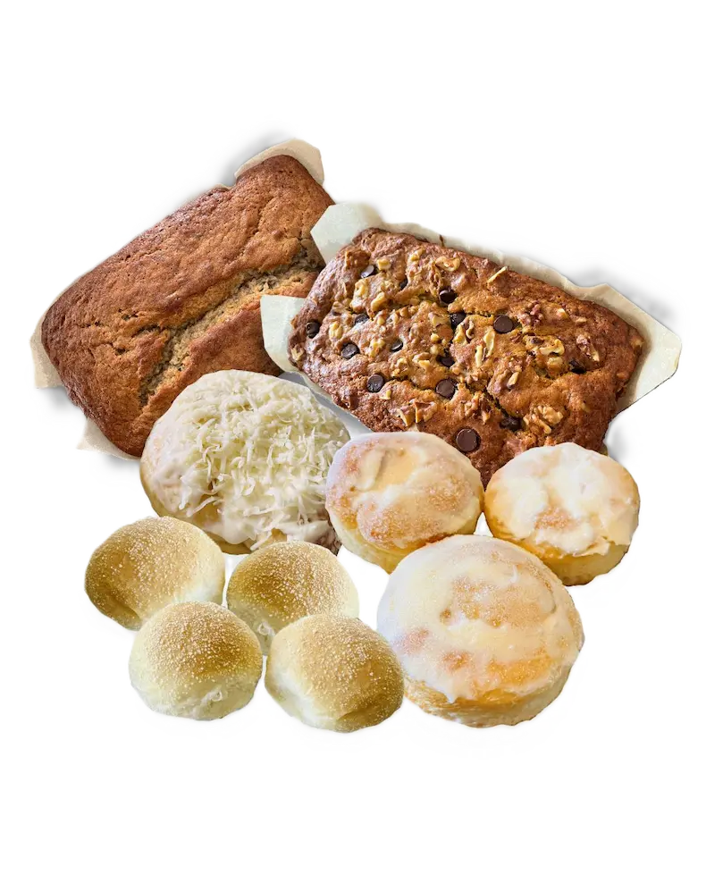

SHANIA ESGUERRA
ABOUT ME
I'm Shania Esguerra and I'm a member of The Church of Jesus Christ of Latter Day Saints. I'm was born and raised in the Philippines until I was 14 years old. My family and I decided to move to Canada and lived here ever since.
I have many hobbies which are: drawing, watching movies and series, playing video games, sometimes read books, and baking bread! Baking bread is one of the hobbies that I am focusing more on now.
MY TOP 5 SONGS ON SPOTIFY
- "If You Believe" by Strive to Be, Patch Crowe
- "Golden" by HUNTR/X, EJAE, Audrey Nuna, Rei Ami
- "Bonvoyage" by Kim Daniel, 1of1
- "Padaba Taka" by dwta
- "Supernova" by WIM